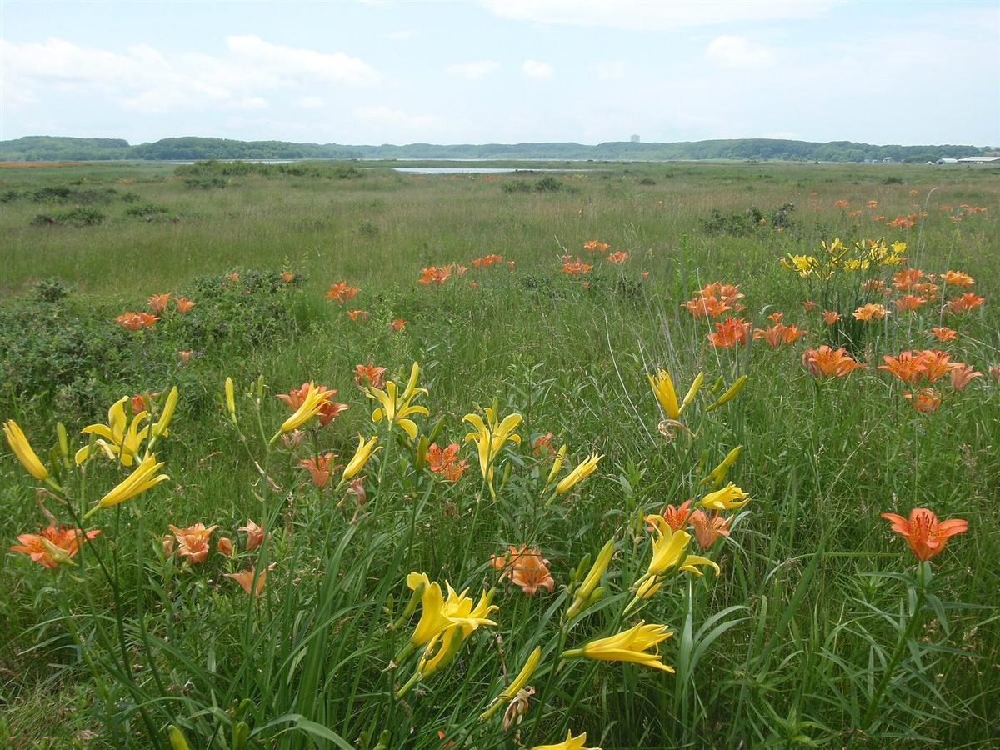
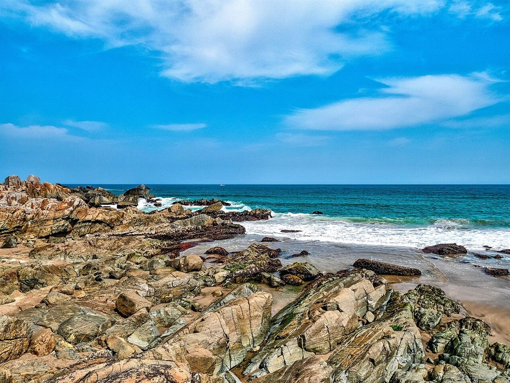

アクセス
愛知県知多郡阿久比町矢高五反田33-1
ご来店前に、お電話でご確認いただくと安心です。
地図
地図は目安です。詳しい行き方はお電話でお問い合わせください。
| 住所 | 愛知県知多郡阿久比町矢高五反田33-1 |
|---|---|
| 電話 | 0569-48-1023 |
| 営業時間 | 準備中(お問い合わせください) |
| 定休日 | 準備中(お問い合わせください) |
| 駐車場 | 準備中(お問い合わせください) |
| 最寄り駅・バス | 準備中(お問い合わせください) |
掲載写真はフリー素材のイメージで、店舗の実際の商品・外観・風景ではありません。撮影地は国内・他地域(海外を含む)・不明が混在します。ここに並べる景色の写真は、阿久比町の風景ではありません。

